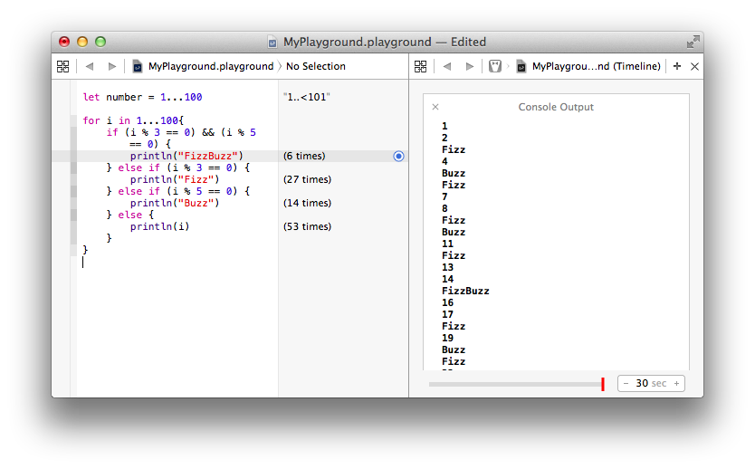

Swiftly Learning Swift: A Quick Lesson
I have discovered Swift and I love it! Incase you haven’t heard of it Swift is a new programming language created by apple to work side by side with Objective-C. Swift is a modern Language that has taken a deep look at how programming works, has kept the best, and removed a lot of the outdated practices that older languages suffer from.
So lets play shall we? Seriously, that’s the first words I heard when began the swift session. Apple has created a wonderland called playgrounds; it makes coding instantly gratifying, because you see the results of your code right away. The playground is divided into three screens: the first is the input screen, the second is result screen which shows what the code is doing, and finally the Console Output which displays what the User will see when running the program. Playgrounds can be used for so much, designing any idea and seeing results every step of the way, errors are shown as you code to help eliminate errors in your test suite, basically its built for fun analytical and visual coding. I’ve included the classic FizzBuzz breakdown so you can get an idea of what swift and playgrounds look like.
Aside from wanting to make apps somewhere down the road, I found so much information about swift that caught my eye. It is designed for safety, eliminating tons of unsafe coding practices. Variables must be initialized before using them, arrays and integers are checked for overflow, and memory is managed automatically. Below are some coding examples to get you started on your Swift journey!
Create a variable:
var firstName = “Michael”
Create a constant:
Let lastName = “Angelo”
Print to the screen:
println(“Michael Angelo”)
Use interpolation
println(“Hello! My name is \(firstName) \(lastName)”)
Swift is ready now! You can go to the app store and download Xcode to start playing in your very own playground today!
Swiftly Learning Swift: A Quick Lesson
Brand New Language: SWIFT
Lets Play in the Playground